Chapter 8: Income, Wealth and Inequality
Plucked! A guide to a fair, simple, efficient and politically feasible tax and benefits system
From Plucked!, by Stephen Stretton and Gordon Styles.
Summary
- When assessing inequality, we can consider whether it is harmful or justified.
- People build material wealth through primary and secondary wealth accumulation. Primary wealth is money or property obtained through savings from wages or acquired through inheritance. Secondary wealth is generated by financial investment of primary wealth.
- Those who have great wealth are able to grow it further through secondary wealth accumulation. Those without wealth (in particular, those who pay rent) have too little income to allow financial investments. They may also see their savings potential decrease through wage stagnation, decreases in the real value of wages, and decreases in their take-home net income, calculated after both taxes and monthly rent are paid (at a time of inexorably rising housing costs).
- Piketty found that under capitalism, returns on financial capital wealth will tend to grow faster than wages. This implies a structural advantage for those who already have secondary wealth.
- A major problem in current financial capitalism is that the wealthy often use their savings to make financial placements in existing assets (pseudo-investments), e.g. stocks bought on secondary markets or ‘investments’ in existing real estate. These are investments in a financial but not an economic sense - no real new wealth is created by them. Instead, they extract surplus from their users (e.g. renters).
- Wealthy people are able to put money into unfair pseudo-investments which do not lead to overall growth, such as land or monopolies.
- Wealthy people also benefit unfairly from lowering of interest rates, leading to increases in asset values.
- Britain has a severe wealth and income inequality problem.
- Inequality is correlated with many social problems, such as higher crime rates, lower life expectancy, poor health outcomes, poor educational attainment, and lower social cohesion.
- Inequality also poses risks for democracy and economic growth.
- Judging from US data, people want a more equal society (more like Denmark).
- Income tax has an important redistributive role. It is effective in reducing income inequality and reducing the top 1% income share.
8.1 Why does Inequality Matter?
through Knightsbridge in London, and watched as expensive cars parked outside designemar shops - even as homeless people begged for spare change on the sidewalk nearby? That’s a clichéd image of inequality. The homelessness of some isn’t caused by the great wealth of others. However, stagnant working-class and middle-class wages may well be. The greater problem in Britain is that a propertied ownership class is taking a rising share of national income, extracting rents from everyone else, and getting increasingly wealthy whilst the majority are squeezed by higher monthly outlays on everything from rents or mortgage payments to tuition fees for kids in college.
In this chapter, we will look at how wealth and income are distributed in Britain. As we will see, the distribution is very unequal. We will ask: Is it a problem that some have so much, while others have little? What relationship is there between high incomes and wealth and contributive merit? Do people really get what they deserve?
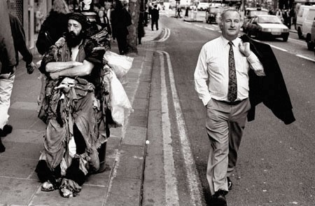
Many would say that extreme inequality is morally wrong, and should be addressed through policy changes and stiff taxes on high incomes and large amounts of accumulated wealth. Others might ask how this wealth was acquired, and warn against discouraging productive activity. We generally have a strong sense that if someone has worked hard for something, then they have earned it and should be able to keep it. If everyone has the same opportunity to build wealth, and rich people gained their wealth through hard work, sacrifice, or ingenuity, we might conclude that the rich deserve their wealth. That is, we would be considering whether the wealth disparity is fair, i.e. gained in reasonable proportion to contributive merit.
Aside from fairness, we also have to consider whether there may be serious social ills associated with an excessively unequal distribution of wealth. Does extreme inequality lead to undesirable outcomes for people and society? Does it lead to social problems such as more crime, poorer health, and shorter life expectancy? Is it a threat to representative democracy? On the other hand, are there social benefits to inequality - for example, does it encourage innovation and the creation of new luxury goods which may eventually be enjoyed by the less wealthy? Does it motivate economic growth? Such questions point us in the direction of an assessment of potential harm or benefit.
In evaluating the status quo, we must take a two-pronged approach:
- Benefit or Harm: Consider whether there are benefits or social ills associated with disparities in wealth and income, aside from whether or not those disparities are fair and just.
- Fairness: Consider how income is received and how wealth accumulates in private ownership in Britain. Then we can assess whether this wealth accumulation occurs via fair or unfair means, and in fair or unfair amounts.
Before making this assessment, we should take a step back. We have talked about ‘wealth’ and ‘riches’ on the assumption that we all take these words to mean the same things. In fact, the word ‘wealth’ in its common usage can refer to very different things. We break down our interpretation of this in the next section.
8.2 What is Wealth?
In its most broad sense, wealth refers to anything of value to people. Based on this rather broad definition, ‘wealth’ can refer to things which are quite intangible. Social connections, charisma, political influence, the rule of law and safety. These are all desirable, at least to most people. People often use the term ‘wealth’ to describe things which are personal and irreplaceable, such as a family heirloom, or even simply family or friends. Such things have little or no ‘exchange value’ (i.e. they can’t be sold, or at any rate can’t be sold for any great amount), but they may have a lot of value in personal and relational terms.
Some things of great value are what we might term ‘social goods’ because they are not privately held by one person. Social goods may include effective public transport, parks, clean air, a free press, and even a feeling of community, or shared destiny. These are hugely important kinds of wealth, even though they aren’t privately held. They are part of what economists call ‘the commons’ or ‘common wealth.’ A good example is clean air. In a world in which the air was too toxic to breathe, the rich might be able to afford to have air filters built into their homes and cars, and benefit from much cleaner air than the non-rich. However, such a world would entail a diminished life for everyone, including the rich, as they would need to employ an expensive, energy-intensive process to provide them with clean air, compared to simply having a clean atmosphere which all could enjoy.
Another example is safety in South Africa. The degree of crime is so bad that drivers regularly have their cars stolen while waiting at stoplights. Wealthy people can avoid being the victims of crime by locking themselves away in secure enclaves, surrounded by high walls and security systems, and protected by private armed guards. The public social good, that of public security, is lacking in South Africa. The rich can protect themselves; the poor cannot. One reason may be a less-than-effective police force, but the greater reason is that social norms are distorted in the direction of criminality by widespread desperate poverty and lack of hope for advancement through legal means. Despite their relative privilege and safety, the wealthy still have a diminished quality of life, resulting from restricted freedom of movement and a fear of becoming a victim of crime.
Perversely, the fact that social goods are valued by everyone can put them at risk in a way that is not the case for goods which are held privately. This is because when people personally own wealth, they are often very concerned about protecting it. People tend to be less actively concerned about wealth held in common with others, as their ties of benefit, provision, and accountability to the social good are often less clear and tangible. Economists refer to this as the ‘tragedy of the commons.’
It is ‘private wealth’ that we are focusing on in this chapter, but we mention social goods here because they are so important for quality of life, and because as we shall see, inequality of private wealth is linked with the loss of some of these social goods. More specifically, we are narrowing ourselves to discussion of privately held material wealth, thereby excluding immaterial or intangible forms of wealth. That said, it is worth noting that having material wealth often enables attainment of immaterial goods of great value. For example, a materially wealthy person may buy access to a top school for their child, which provides that child with access to a good education and good social connections that are likely to lead to lucrative and powerful career opportunities later in life. Similarly, paid entry into expensive elite social clubs offers valuable networking opportunities. Material wealth can buy time, unique experiences, unpaid internships, physical attractiveness (to an extent), and worryingly, it can also buy wildly disproportionate political influence (look at Rupert Murdoch). Perhaps the only thing material wealth can’t directly buy is love and happiness - though many will still try.
8.3 How Do People Build Material Wealth?
There are many ways, both legal and illegal, but we will confine ourselves here to the most significant legal means:
Wages
Wages are an income earned through some form of economic activity, such as working as an employee or a self-employed trader, or creating something and selling it. People who earn just enough income to meet their needs won’t build up much wealth through savings. High rents on flats in crowded cities - the very places where most of the jobs are - have made it very difficult for most people to save any money at all in contemporary Britain. Only a minority of people blessed with a very high income and low living costs can build up wealth from savings of a portion of their income - perhaps enough to make some financial investments.
Inheritance
Some people gain wealth through inheritance, or by dint of a gift from wealthy relations. Great family wealth can be passed down and increased over many generations.
Theft or illegal trading
In a good many cases, an individual or family acquired its initial wealth pool by illegal means - for example, family members may have taken bribes or kickbacks whilst occupying high government office, or may have sold illegal drugs or weapons. Does this seem unlikely in contemporary Britain? Perhaps - but consider that it is routine in most countries of the world, and enormous amounts of wealth obtained through such means by foreigners has been ‘invested’ in Britain, for example in expensive London or Oxfordshire real estate.
Dumb luck
In still other cases, a person might acquire significant wealth by simple luck. In a very few cases, this might involve buying a winning lottery ticket. In far more cases, it might entail having bought London real estate inexpensively forty or fifty years ago, and now sitting on a property valuated at more than ten times what it had been when it was purchased.
Entrepreneurship
In some cases, a person with no money but a lot of energy and talent might be able to persuade an angel investor (and later on, some venture capitalists) to invest in a company startup that produces some novel good or service. If the entrepreneur manages to make a success of the business, and retains a large equity stake, that might suffice to catapult him or her from wage-taking employee status into the wealthy proprietarial class.
The above five ways in which people first acquire significant wealth might be termed ‘primary wealth attainment’ (Karl Marx called it “primitive accumulation”).
Once a person has some wealth, there are myriad ways in which to deploy it so as to increase one’s wealth further. This can be called ‘secondary wealth accumulation’ and includes the following actions, among others:
- Investing in companies by buying stocks and shares or some other financial instrument. If the company does well, then the investor will increase his or her wealth through dividends, or by selling the stock when it has higher value.
- Investing in savings products such as mutual funds (which invest on a person’s behalf) that pay interest.
- Buying land or property and selling it once it has increased in value (possibly also receiving rent income in the meantime).
- Investing directly in a business that produces some good or service.
From the above list, it’s easy to see how those who are already rich can get a lot richer. They don’t have to build up wealth through labour or invention. Owning wealth opens up a raft of secondary wealth generation and accumulation opportunities, and it allows one to take bigger financial risks. The wealthy are also likelier to invest their riches profitably because they can afford to pay advisors and wealth managers to locate investment opportunities and to minimise tax liabilities on their behalf.
Are advantages like these really enough to propel the rich into ever-increasing rates of wealth-accumulation? Yes. Ever-increasing global inequality suggests that this is indeed the case. (OECD 2015) Let’s take a look at the extent of wealth and income inequality in Britain today.
8.4 Inequality of Wealth
The British Context
There is a serious level of wealth inequality in Britain today. According to the figures from the Office of National Statistics from 2012 to 2014, the richest 10% of UK households hold 45% of all wealth, while the poorest 50% own just 8.7% (ONS 2015b).
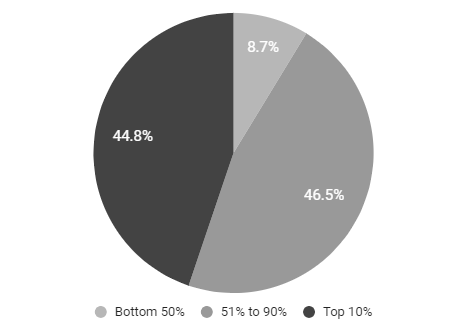
Particularly striking is the fact that the richest five families in the UK are wealthier than the bottom 20% of the population (Dransfield 2014).
Here are a few notable facts about the UK wealth distribution:
Bottom 10% of households have total wealth of £12,550 or less.
Median total household wealth is £225,000.
The top 10% of households have a total wealth of over £1m.
The top 1% of households have a total wealth of £2.87m+.
The below chart shows the distribution in a finer grain, allowing us to see the share of wealth held by the top 1% in British society (ONS 2015a).
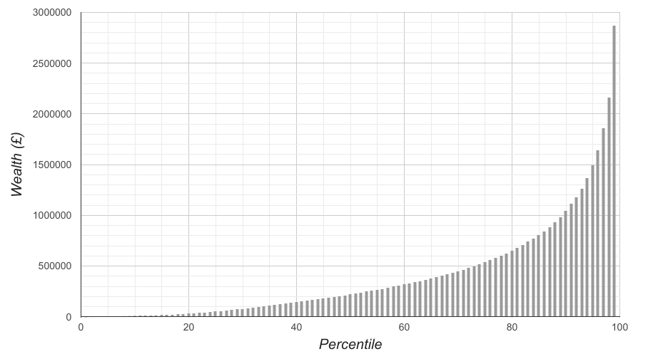
The intensity of wealth inequality continues to increase. The richest 10% are getting richer not only in absolute terms, but also in terms of their percentage share of total wealth and total income.
The Role of Property
ONS figures from 2012-14 show that while the total proportion of wealth held by the top 1% remained steady at 13%, the next 9 per cent richest households, increased their share to 31.2 per cent of total wealth. This was up from 30.1 per cent two years previously.
The inequality increase occurred entirely in net property wealth, during a period of house price rises (ONS 2015a). This indicates that a large part of the growing wealth of the richest 10% in Britain is due to their ownership of property, rather than wage income or business income.
A 2014 Credit Suisse report confirmed these findings. They found that the top 10% in the UK have become wealthier since the financial crisis because of value increases in assets. They also showed that Britain is the only country in the G7 group of leading economies where inequality has increased this century. (Treanor and Farrell 2014)
8.5 Inequality of Income
We have discussed wealth inequality, which is the vast discrepancy in the ownership of assets, such as property, cash and investments, held across Britain. There also exists a less severe, but also worrying form of inequality. This is inequality of income.
Income may come from a variety of sources, such as interest on savings, wages, dividends, cash benefits (such as State benefits), and rental income. Some of this income may be taxed. Measures of income inequality generally consider inequality in disposable incomes (after benefits and after direct taxes). The below flow-chart shows the various stages of household income:
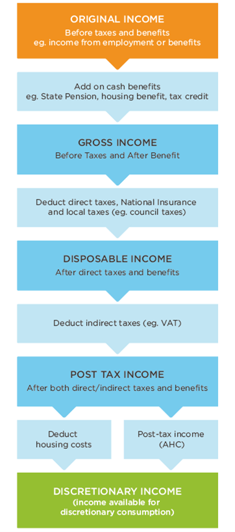
Disposable income may be measured before-housing-costs (BHC) or after-housing-costs (AHC). When considering income, it is important to be precise about the kind of income being discussed. For example, when looking at income inequality, we can see that there is more inequality in income after-housing-costs than in income before-housing-costs, because poorer households tend to spend a higher share of their income on housing than those higher up the income distribution (McGuinness 2016).
In the chart below (IFS 2014), we can see how the share of pre-tax household income going to the top 1% has increased over time.
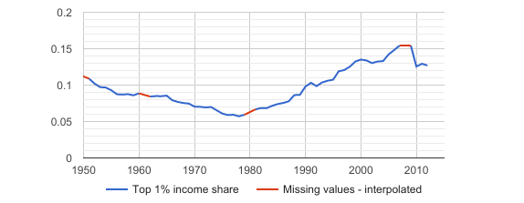
The top incomes of the top 1% appear to be ‘racing away’ from the remaining 99%. Data suggests that income inequality within the bottom 99% is remaining reasonably stable or possibly slightly decreasing, while the national income share of the top 1% is increasing.
There exists, of course, a relationship between income inequality and wealth inequality. Income leads to wealth when it is saved up and when it is used to buy assets. Wealth also generates income as shares generate dividends, savings generate interest, and property ownership generates rental income.
Households with great wealth often also receive high incomes. However we can easily imagine someone who has great wealth in the form of property, investments, and bank balance, but who has little income (perhaps a retiree). Similarly, someone may make a significant income, but have debts and high outgoings, so they don’t build up wealth (perhaps a young person on a high salary). The effect of a sudden reduction in income or unexpected expenses would have a dramatically different effect on each of them.
Broadly speaking, we have seen:
- Wealth distribution in the UK is very unequal and getting more so.
- Income distribution is also very unequal, but less so than wealth distribution.
- The top 1% income share is increasing quickly.
- Wealthy people tend to be on high incomes. Those with little wealth tend to be on low incomes.
Understanding the above graphs and figures requires us to look behind the figures and consider how different groups earn and use their income. At the lower end, there are those who earn their income through labour, and who must pay housing costs. They have very little disposable income and are unlikely to have much income available to invest in secondary wealth generation. They may have seen their nominal wages stagnating (Khan 2016), while the real value of their wages decreases (Tily 2016). At the other extreme are those who have high incomes and are able to make additional income through purchasing assets. As we have seen, increases in asset values (particularly property assets) have driven an increase in the wealth of the very rich. With assets comes income through dividends, rent, and capital gains. This appears to be contributing to growing inequality of both wealth and income.
Quoted in the Financial Times, the general secretary of the Trade Union Congress, Frances O’Grady, put it this way:
“The economy is paying people too little for hard work and too much just for sitting on wealth. It is making Britain more and more unequal, with those who are already rich moving even further ahead of the typical family (Giles 2015).”
8.6 Effects of Inequality
But is this inequality in itself really such a problem? If we could ensure that all citizens have their basic wants covered, does it matter if the rich are getting richer? Surely dealing with absolute wealth in this way and ensuring a basic standard of living is a more important focus than the relative wealth between rich and poor?
It is clear that there is a strong view amongst some circles that inequality is not a problem as long as the poorest have their basic needs met.
High wealth and income inequality matter for a host of reasons. It causes subtly damaging changes in the way people interact with each other and participate in society. According to the Equality Trust, income inequality is correlated with low civic participation, lower voter turnout, and lower levels of cultural activity (The Equality Trust 2014). There is even evidence that inequality may affect personality (The Equality Trust 2017). Research comparing US states found, despite adjusting findings for state and person-level socio-demographic factors, that people in less-equal states were ‘less agreeable’ than those in more-equal states (Vries et al. 2011).
A World Bank study on inequality and crime rates reported a strong correlation between violent crime and inequality, both within and between countries.
Inequality and Empathy
Psychologist Paul Piff has conducted research (Piff et al. 2010) on a phenomenon called the ‘empathy gap’. In his experiments, test subjects were artificially placed into social hierarchies. Piff and his colleagues concluded that increased wealth and status in society leads to increased focus on oneself. This, in turn, leads to decreased compassion, altruism, and ethical behavior. The opposite is also true. Piff’s work suggests that poorer individuals tend to be more generous, charitable, trusting and helpful, compared with their richer counterparts. A related study by Keltner et al, found that ‘lower-class individuals’ displayed more compassion and sensitivity to the distress of others than their upper-class counterparts (Stellar et al. 2012).
Social class and wealth, therefore, appear to be negatively correlated with qualities like compassion and empathy. This may be exacerbated by increasing physical segregation in where the rich and poor live. Poor, rich, and average households became less and less likely to live next door to one another between 1970 and 2000 (Dorling, Daniel 2007) suggesting that socioeconomic polarisation has been accompanied by geographical segregation.
Surprisingly, there is even evidence that inequality may affect personality. Research in the USA compared less equal US states with more equal states. After adjusting for state and person-level socio-demographic factors, de Vries et al found that people in less equal states were ‘less agreeable’ than in more equal states.
Inequality and Crime Rates
In a study on inequality and crime rates, Lederman et al. found a strong correlation between violent crime and inequality (Lederman et al. 2002), both within and between countries. In their view:
“The correlation reflects causation from inequality to crime rates, even correcting for other crime determinants.”
Simply put, this means that inequality causes high crime rates, not vice versa. The mechnism by which this occurs is unclear and may be multifactored. Economic inequality may curtail opportunities for some, leading to feelings of hopelessness, inferiority, and fear which then lead to violence. Inequality may encourage social competition, and low levels of trust and community cohesion within a society.
There is also a strong correlation between high income inequality and low social mobility. Social mobility is the upward or downward movement of people between social strata in a society. Mobility may be intra-generational (i.e within a generation, as per ‘rags to riches’ stories), or it may be inter-generational, i.e a change in social status from parents to children.
In an intergenerational study of the American context by researcher Corak, it was observed that high earnings inequality is likely to be associated with stagnation in intergenerational mobility. This means that earnings inequality makes societies more ‘sticky,’ such that children are more likely to stay in the same social stratum as their parents.
Corak cautions that this outcome is particularly likely if labour market inequalities translate into political power, which then influences whether progressive policy reforms are made. He warns,
“Without changes in these underlying factors, the transmission of inequality from the current generation to the next will remain a movie that is played to the same script as that viewed by past generations.” (Miles Corak 2011)
Figure 8.8 shows the strong correlation between inequality and a measure called ‘intergenerational earnings elasticity’ (IEE), which is used by social scientists when considering intergenerational social mobility. IEE is the percentage difference in earnings in the child’s generation associated with the percentage difference in the parental generation (Miles Corak 2011). An intergenerational elasticity in earnings of 0.9, for example, means that if father A makes 100% more money than father B, then the son of father A will, as an adult, earn 90% more than the son of father B. An elasticity of 0.2 says this 100% difference between the two fathers would only lead to a 20% difference between the sons.
The lower the elasticity, the more mobility in the society. Figure 2.5 shows that increased inequality at any point in time is correlated with lower generational earnings mobility. Note that mobility can be in either direction, up or down. The IEE is simply considering the earnings difference between generations.
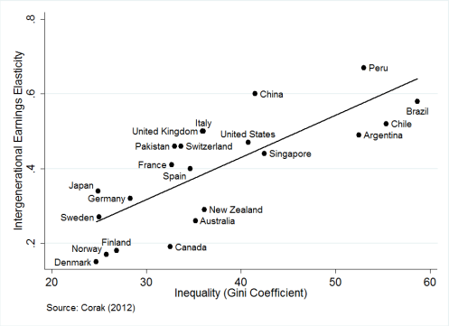
This chart is widely known as the ‘Gatsby Curve’. It is so named after the character of Jay Gatsby in the famous novel by F. Scott Fitzgerald. In the novel, Jay Gatsby tries in vain to raise his social standing by becoming very rich. The novel is set in the 1920s, when there was high inequality of wealth and very low social mobility.
One suggested reason for the correlation between inequality and intergenerational earnings mobility is unequal access to educational opportunities. This is exacerbated by poor social and family relationships, which then inhibit learning. The below image is from a 1916 advertisement for a vocational school, and suggests that education is a pathway to upward social mobility.
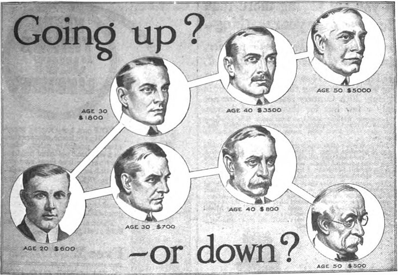
These findings offer insights into how intergenerational poverty and welfare dependency have a real structural basis, and are not entirely within the control of an individual’s willingness, effort, or merit.
Inequality and Liberty
If we accept the evidence that economic inequality lead to negative social outcomes, might we nevertheless also argue that inequality is a necessary and inevitable outcome of a free society and equality before the law? In his book ‘The Constitution of Liberty’, political philosopher Fredrich Hayek argued:
“From the fact that people are very different it follows that, if we treat them equally, the result must be inequality in their actual position, and that the only way to place them in an equal position would be to treat them differently. Equality before the law and material equality are therefore not only different but are in conflict with each other; and we can achieve either one or the other, but not both at the same time.”
Hayek also argues that an attempt to achieve complete material equality between people can only come at the expense of freedom:
“While an equality of rights under a limited government is possible and an essential condition of individual freedom, a claim for equality of material position can be met only by a government with totalitarian powers.” (Hayek 1944)
One response would be to say that in objecting to extremes of inequality, one is not advocating strict equality of outcome for all.
The obvious problem with Hayek’s argument is that distribution according to merit is just one conception of social justice. Consider the principles of fair equality of opportunity, and the societal goal of raising the lowest social position as much as possible. We propose that extreme inequality needs to be eliminated to create a level playing field where individuals are given the opportunity to demonstrate their merit (Lister 2011).
Wealth Inequality and the Democratic Process
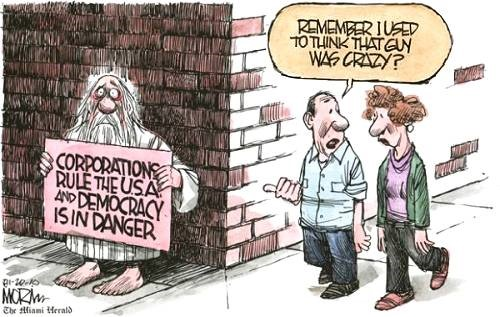
Despite Hayek’s famous theory on the constitution of liberty, a very real danger of wealth inequality is the threat to the democratic process. Extremes of wealth mean that those at the top, whether they be corporations (as per the above cartoon) or individuals, have disproportionate access to power, and an ability to influence politicians for their own interests. A famous quotation, attributed to noted American Supreme Court Judge Louis D. Brandeis, put it simply:
“We can have democracy in this country or we can have great wealth concentrated in the hands of a few, but we cannot have both.” (Dillard 1904)
There is strong evidence that extremes of wealth inequality lead to so-called ‘representational inequality.’ Work by Professor Martin Gilens of Princeton University found that in the US, when the policy preferences of the affluent differ from those of the middle-class or poor, there is virtually no relationship between policy outcomes and the desires of less advantaged groups (Gilens et al. 2004). Policies favored by 20 percent of affluent Americans have about a one-in-five chance of being adopted, while those favored by 80 percent of affluent Americans are adopted about half the time. In contrast, the support or opposition of the poor or the middle class has no impact on a policy’s prospects of being adopted (Gilens 2012).
Economist Dabla-Norris notes in a 2015 IMF report (Dabla-Norris et al. 2015) that income inequality can have serious consequences for political stability, saying:
“Widening inequality also has significant implications for growth and macroeconomic stability, it can concentrate political and decision making power in the hands of a few, lead to a suboptimal use of human resources, cause investment-reducing political and economic instability, and raise crisis risk.”
Inequality and Growth
Some would argue that inequality is nevertheless necessary for economic growth. Inequality is thought by some to encourage entrepreneurialism (Matthews 2016) and the wealthy are thought to invest in the economy. It is also claimed that when the state redistributes wealth through taxation and benefits, resources are lost through administration and bureaucracy. However, recent research by the Organization for Economic Cooperation and Development (OECD) suggests that even this purely economic argument is on shaky ground. Its 2014 analysis found that high levels of income inequality have a statistically significant negative impact on growth.
The study found that:
“Rising inequality is estimated to have knocked more than 4 percentage points off growth in half of the (OECD) countries over two decades. On the other hand, greater equality prior to the crisis helped GDP per capita in a few countries, notably Spain.” (OECD 2014)
Furthermore, while there is evidence that the promise of wealth is a strong motivator for entrepreneurs, the majority of the top 1% in the US are not entrepreneurs - they are executives, managers, supervisors, and financial professionals (Bakija et al. 2012).
These findings reinforce the work of Piketty on inequality and ‘low growth capitalism.’
In this section, we have considered the effects of inequality in terms of its impact on empathy, social problems, crime rates, and social mobility. Contrary to claims that income and wealth inequality are necessary for liberty and growth, we see evidence that inequality threatens a functional democracy and growing economy.
8.7 How much Inequality Do People Want in Society?
We’ve seen above that income inequality and wealth inequality are associated with very undesirable social consequences. However, most would not welcome an economic system in which everyone received exactly the same amount. There has been some research from the US as to what distribution of wealth people believe there should be in society.
In a 2011 study by Dan Ariely and Michael Norton (Ariely and Norton 2011), a nationally representative online panel of Americans were asked to estimate the current distribution of wealth in the USA, and to describe a distribution they deemed ‘just’. The results were striking. All demographic groups (including Republicans and the wealthy) desired a more equal distribution than the actual US wealth distribution. Secondly, all groups vastly underestimated wealth inequality in the US, estimating that the top quintile held about 59% rather than the actual amount of about 84%.
The below chart shows the distribution which the participants estimated was the case, the participants’ ideal distribution, and the actual US wealth distribution. We can see that the participants’ estimated distribution is as far from the actual distribution as their ideal distribution is from their estimated distribution of wealth inequality in the US.
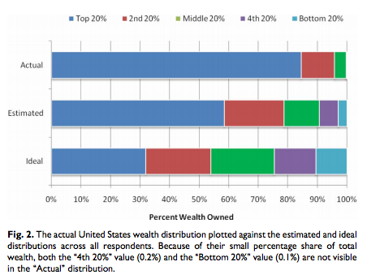
The researchers concluded two main points. First, that a large, nationally representative sample of Americans seems to prefer to live in a country more like Sweden than like the United States. Americans also construct ideal distributions that are far more equal than they estimated the United States to be - estimates which themselves were far more equal than the actual level of inequality.
Second, there was much more consensus than disagreement across groups from different sides of the political spectrum about this desire for a more equal distribution of wealth, suggesting that Americans may possess a commonly held “normative” standard for the distribution of wealth despite the many disagreements about policies that affect that distribution, such as taxation and welfare.
In short:
- Americans think the US is more equal than it is;
- Americans would like the US to be even more equal than they think it is (more like Sweden); and
- This preference held across the political spectrum.
8.8 Is Income Inequality Merited?
We have now seen that inequality is associated with significant social ills, such as increased crime rates and poor health and longevity outcomes. We have also seen that it may pose a real threat to representative democracy and to economic growth. So, there is clear evidence of harm or potential harm arising from excessive wealth inequality in Britain.
What about fairness? Has the wealth of the very rich been accumulated through fair means? Remember again the ways of accumulating wealth which we discussed in the beginning of this chapter. There was primary wealth acquisition, occurring through income from legal or illegal economic activity or inheritance. There was also secondary wealth acquisition which involved putting wealth to use in the form of investment, to accumulate more wealth. We said that if the rich are rich because they work hard and ‘work smart’ and the poor are poor because they do not, then that might be one reason for viewing wealth inequality as fair.
Inequality due to Income or Inheritance
When it comes to those primary forms of wealth acquisition, we know that unfairness exists. It would be wonderful if everyone had an elderly aunt who could leave them a sizeable inheritance, but that is clearly not the case. Some people have friends who help them get a high-paying job, some do not. Some people go to excellent schools, some do not. Some work, no matter how important to society, pays less than other work. These kinds of unfairness are difficult to tackle, raise many ethical issues, and are outside the scope of this book. However, it is worth mentioning that the world is not a level playing field and while attempts can be made (through inheritance tax and affirmative action policy) to redress unfairness of opportunity to gain primary wealth, attempts to totally eradicate it would probably be futile. They would also probably have serious unintended consequences. As your parent may have told you when you were a child, ‘sometimes life just isn’t fair.’
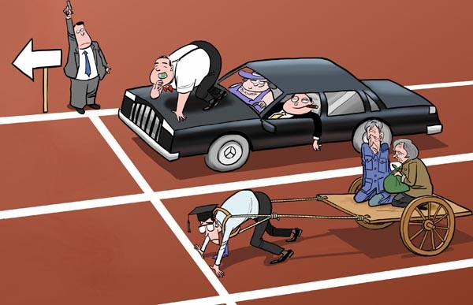
To what extent is someone’s monetary success due to their own work, and to what extent is it their luck or privilege (in terms of genes, or parental support), or a product of the wider society? And to what extent should we reward those who seek money over other objectives?
Income taxation is one of the main ways in which the government affects income distribution across society. From a purely philosophical point of view, it’s not easy to determine what the rate of income tax should be. We’ll come back to this in the next chapter, when we look at this through the prism of income inequality and recent historical experience. We’ll also consider the fairness of different processes of wealth accumulation.
8.9 Direct Taxes and their Redistributive Role
Income Tax in the UK
Most people, when they think of tax, immediately think of income tax. It is possibly the most noticeably intrusive tax in every individual’s life, requiring, as it does, the keeping of records, the filling in of forms, and possible sanctions from the ‘tax man.’ Unlike VAT, which is added to goods and services we purchase, income tax comes out of our earnings. There is often an added feeling of grievance associated with the sense that the government is taking money for which we have worked very hard.
Income tax is progressive, with different rates of tax payable according to income. These rates are called ‘Bands.’ As of 2016, each individual is entitled to a’personal allowance’ of £11,000 of non-taxable income. Above this, their income is taxable. Taxable income (i.e. income above the personal allowance) is subject to different tax rates depending upon the band within which it falls.
The current top marginal tax rate is 45%. The below chart shows how top marginal tax rates have changed over time for different countries. We can see that the top tax rate for the UK was very high during the Second World War and in the late 1970s. The top rate dropped sharply during the prime ministership of Margaret Thatcher in the 1980s.
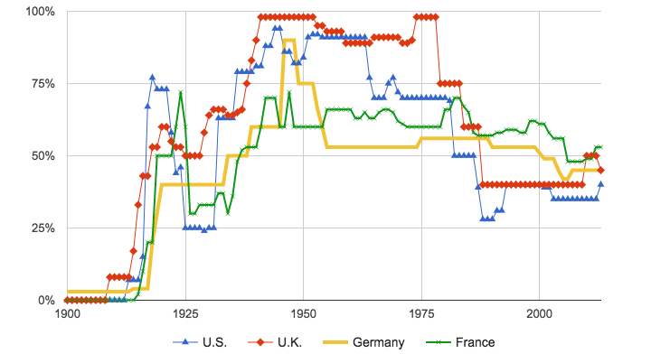
The Effect of UK Taxes on Income Inequality
Direct taxes (e.g. Income tax, National Insurance Contributions) act to reduce inequality of income. Wealthier households pay higher amounts of direct tax and a higher proportion of their income in direct taxes. They are progressive taxes.
The below chart shows the effect which the combination of tax and benefits have on income inequality (Wells and Thomas, n.d.). The y-axis is the degree of inequality as measured by the ‘Gini coefficient’ 2. The blue line is the level of income inequality before taxation and benefit distribution.
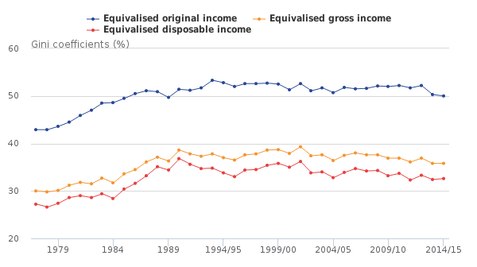
According to these ONS figures in 2014/15, the richest fifth of the population paid 22.8% of their gross income on direct taxes. The majority of this was income tax. The average tax bill for the poorest fifth was 11% of their gross income. The majority of this was from Council tax.
In 2014/15, after direct taxes, the average incomes of the richest fifth of households was five and a half times that of the poorest fifth (£67,000 and £12,300 per year respectively).
Income tax made up the largest proportion of direct tax paid by the richest fifth of the population. Income tax is the most progressive of the direct taxes and thus has the biggest effect on reducing income inequality. The below chart compares the progressivity of income tax, National Insurance Contributions and Council Tax. A positive value indicates progressivity.
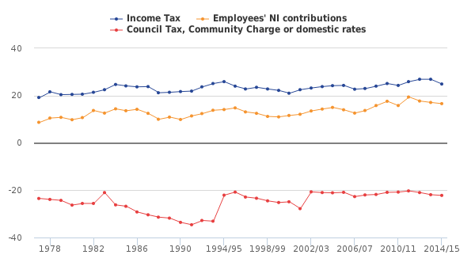
Despite fluctuation, there is a clear overall trend towards increased progressivity.
Using Income Tax To Reduce Income Inequality
Earlier, we discussed the top 1%, and evidence that their share of total income is racing away from the share of the other 99%. The below chart shows how the income share of the top 1% correlates with top marginal tax rates in the USA.
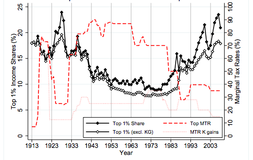
Immediately we can see a strong oppositional relationship, whereby a high marginal tax rate is generally correlated with a lower income share. So again, in the roaring 20s, we have a lower top marginal tax rate of about 25%, and the income share of the top 1% reaching a height of around 23%. During the depression of the 1930s and the Second World War, there was an increase in the top marginal tax rate and a severe reduction in the top 1% income share. During the 1980s, another drop in the top marginal tax rate and and an increase in the top 1% income share once more. So, this suggests a strong direct relationship between an increase in top marginal tax rates and a decrease in the top 1% income share.
The pattern is also evident if we compare different countries. The below chart shows the top tax rate and 1% share for a variety of countries in 2004-2008.
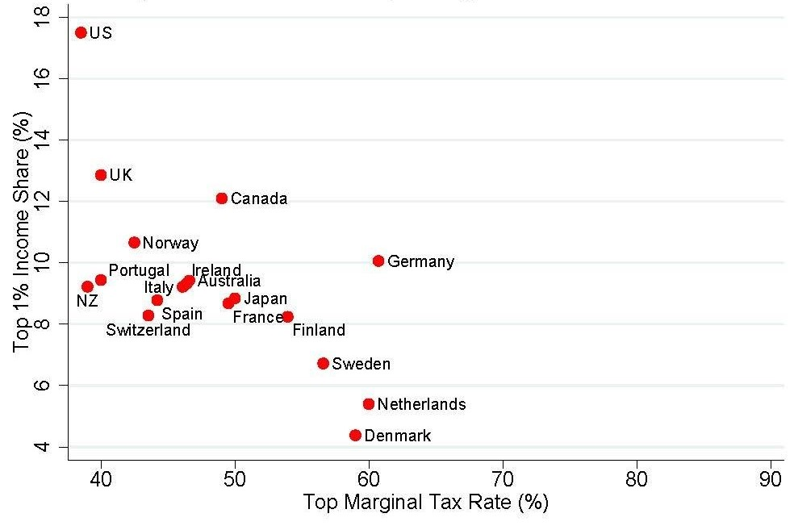
Again the top marginal tax rate appears to have an inverse relationship with top 1% income share. Those with the lowest 1% income share are the Nordic countries, with top marginal tax rates of between 55 and 60%. The UK and US, with lower top marginal tax rates of 40% and under, are also among the highest in 1% income share. There are anomalies, however, which indicate that top marginal tax rate is not the only factor contributing to the 1% income share. Germany is a bit of an outlier, perhaps due to tax deductions.
So, we conclude by arguing that firstly, the progressivity of income tax is welcome; and that a top marginal rate of around 60% is probably necessary to keep a moderate and stable income and wealth share of the top 1%. Reforming deductions and other complexities that the rich can exploit is another possible area of focus.
8.10 Income Tax: Who Pays It? How Is It Paid?
Income tax is paid on income, which can include money earned from employment or self-employment, state benefits, some pensions, rental income, investment income, income from trusts, and work benefits. Some income is exempt from tax - for example interest on savings in tax-exempt accounts.
There are several ways in which income tax is paid, which vary according to whether the taxpayer is an employee, self-employed, and/or in receipt of benefits. There is generally no minimum age for paying most income taxes - therefore even children who receive income over the tax-free threshold will be required to pay tax.
Employees
Employees in Britain have income tax taken out of their pay packet before they are paid their wages. This is called Pay As You Earn (PAYE). Employers determine the tax payable by using the employee’s tax code. This is a code which HMRC gives each taxpayer for tax assessment purposes, and which delineates their income tax bracket.
State benefits
Those whose only income is state benefits may not have to pay any tax. In some cases, HMRC will require those on state benefits to submit a self-assessment tax return. This is a form (available online or in paper form) which stipulates an individual’s income and is used by HMRC to calculate tax owed. The table below shows which benefits are taxable and which are not.
| Taxable State Benefits | Non-taxable state benefits |
|---|---|
| The State Pension | Housing Benefit |
| Jobseeker’s Allowance | Employment and Support Allowance (income related) |
| Carer’s Allowance | Income Support (though you may have to pay tax on Income Support if you’re involved in a strike) |
| Employment and Support Allowance (contribution based) | Working Tax Credit |
| Incapacity Benefit (from the 29th week you get it) | Child Tax Credit |
| Bereavement Allowance | Disability Living Allowance |
| Pensions paid by the Industrial Death Benefit scheme | Child Benefit (income based) |
| Widowed Parent’s Allowance | Personal Independence Payment (PIP) |
| Widow’s pension | Guardian’s Allowance |
| Attendance Allowance | |
| Pension Credit | |
| Winter Fuel Payments and Christmas Bonus | |
| Free TV licence for over-75s | |
| lump-sum bereavement payments | |
| Maternity Allowance | |
| Industrial Injuries Benefit | |
| Severe Disablement Allowance | |
| Universal Credit | |
| War Widow’s Pension |
Self-employed
Those who are self-employed, such as those operating as a sole trader, will be required to register as self-employed and submit self-assessment tax returns.
Foreign Income
In some cases, a person may be required to pay tax on foreign income. This is income from outside England, Scotland, Wales, or Northern Ireland. Whether a person is required to pay tax on foreign income will depend on whether they are considered ‘resident in the UK’ for tax purposes. Those who are not resident in the UK will not have to pay tax on foreign income. UK residents pay tax on such foreign income. Special rules exists for UK residents who are ‘domiciled’ abroad. Foreign income includes wages if a person has worked abroad, foreign investments and savings interest, rental income on overseas property, and income from pensions held overseas.
8.11 Income Tax: Allowances and Rates
Personal Allowance
Most people will not pay tax on all of their income. Rather, there is a set amount of income which a person can keep tax-free. This is known as the ‘Personal Allowance.’ Income above the personal allowance is taxable. As of 2017, the standard Personal Allowance is £11,500. Thus, for most people, income up to £11,500 will be tax free, and income above this amount is taxable. Those whose income is greater than £100,000 will have a smaller tax-free personal allowance 3. Those in receipt of Marriage Allowance or Blind Person’s Allowance have a greater Personal Allowance.
Tax Bands
Above the personal allowance,income is taxable. However it is not all taxable at the same flat rate. The tax rate progressively increases in ‘bands’ as the amount of income increases. That is why income tax is known as a ‘progressive’ tax - the rate increases as income increases. These rates are known as ‘marginal tax rates.’ The below table shows the tax bands for the UK (with the exception of Scotland, which has different rates).
| Tax Band | Taxable income | Tax rate |
|---|---|---|
| Personal Allowance | Up to £11,500 | 0% |
| Basic rate | £11,501 to £45,000 | 20% |
| Higher rate | £45,001 to £150,000 | 40% |
| Additional rate | over £150,000 | 45% |
Income above £150,000, is taxed at the Additional Rate of 45%.
So, for example, a person who had an income of £50,000 would calculate their tax payable as follows. As can be seen above, the personal allowance is effectively a 0% tax rate on the first £11,500. The basic rate of 20% applies on income above £11,501 and up to £45,000. Any income between £45,001 and £150,000 is taxed at the higher rate of 40%.
(£33499 x 0.2) + (£4999 x 0.4) = £6699.8 + £1999.6 = £8699.4.
Savings and Dividend Allowances and Tax Relief
There are some other specific circumstances in which one might pay less income tax.
Tax relief: Tax Relief allows taxpayers to reduce the tax they pay or to get some tax repaid. Tax relief may be available to people who pay personal pension contributions, charity donations, or maintenance payments, and to those working in special circumstances. Tax relief also applies to work or business expenses. Self-employed persons may be able to claim tax relief for certain business expenses, while employees may claim tax relief for some expenses incurred during the performance of their job.
Generally, tax is payable on interest earned from savings accounts, and on any dividends earned from shares owned. However, for these two sources of income, tax relief may be applicable, depending on how the investments are disposed or reinvested.
Savings interest allowance
In the case of savings interest, the size of the allowance depends on how much ‘other’ (i.e non savings interest) income the taxpayer has. If the total amount of ‘other’ income is less than £16,500, then they will be eligible for a maximum savings interest allowance of £5,000. This is called the ‘starting rate.’ The starting rate will be reduced by £1 for every £1 of other income above the Personal Allowance. Those whose ‘other’ income is greater than or equal to £16,500 will not be eligible for the ‘starting rate’ of savings allowance.
HMRC offer the following example of a savings allowance calculation on their website (we paraphrase for clarity) 4;
Mark earns £15,000 in wages and gets £200 interest on his savings. HIs ‘other’ income (his wages) is less than £16,500, so he is eligible for the maximum savings interest allowance of £5000. Therefore his starting rate is £5000
This rate is reduced by £1 for every £1 of ‘other’ income above the personal allowance. His Personal Allowance is £11,500.
Therefore £15000 - £11500 = £3500. He has £3500 of ‘other’ income above the Personal Allowance. Therefore his starting rate is reduced by £3,500. His remaining savings interest allowance is £1,500 (£5,000 minus £3,500).
Therefore, as Mark’s savings interest is £200, which is under his allowance, he doesn’t pay tax on his savings interest”
The starting rate is not the only way in which one can avoid paying tax on savings interest. Depending on which tax band a taxpayer’s income falls in (Basic, Higher or Additional), the taxpayer may get up to £1000 savings interest tax-free. The below table shows the different allowances for the respective tax bands.
| Income Tax band | Tax-free savings income |
|---|---|
| Basic rate | £1000 |
| Higher rate | £500 |
| Additional rate | £0 |
The savings covered by the allowance include bank and building society allowances, savings and credit union accounts, unit trusts, investment trusts, investment companies, and peer to peer lending. Also, government or company bonds, life annuity payments, and some life insurance contracts. Savings which are already in tax-free accounts (eg ISAs) are not included in the allowance.
Dividends
No tax is payable on the first £5,000 of dividends received in the tax year. Above this allowance, the tax payable depends upon which income tax band the taxpayer is in. The below table shows the dividend tax rate for various tax bands.
This area of income tax is somewhat complex. For further information, HMRC offers a detailed factsheet.
| Tax band | Tax rate on dividends over £5000 |
|---|---|
| Basic rate | 7.5% |
| Higher rate | 32.5% |
| Additional rate | 38.1% |
8.12 National Insurance
Originally, National Insurance (NI) did resemble an insurance program. It began in 1911, whereby employees would pay a portion of their wages into the scheme, and could claim from it if they fell ill or became unemployed. In this sense, it was very much a contribution-based system, whereby ‘those who paid in, could take out’. Now, workers pay National Insurance to build up an entitlement to claim several social benefits. One’s entitlement to benefits depends on the ‘Class’ of National Insurance one pays.
NI Classes and Contributions:
Some form of NI is payable by anyone who is 16 or over and is either an employee earning over £157 per week or is self-employed and making a profit of £6,025 per year.
There are separate ‘classes’ of National Insurance. These are numbered 1 to 4. The class into which an individual falls depends on their type of employment and income level.
Class 1 National Insurance
This is paid by employees under State Pension age earning more than £157 a week. It is automatically deducted by the employer. Employers also pay Classes 1A and 1B NI once a year on any expenses and benefits they give to their employees. For the tax year 2017 to 2018, the rate is 13.8%.
The 2017-18 Class 1 National Insurance Contribution rates are as follows:
| Your pay | Class 1 National Insurance rate |
|---|---|
| £157 to £866 a week (£680 to £3,750 a month) | 12% |
| Over £866 a week (£3,750 a month) | 2% |
Class 2 National Insurance
Self-employed people who earn £6,025 per year or over pay Class 2 NI. Those who earn less may choose to pay voluntary contributions. For the tax year 2017-18, the rate is £2.85 a week.
Class 3 National Insurance
These are voluntary contributions which can be paid to fill or avoid gaps in a person’s NI record.
Class 4 National Insurance
Class 4 contributions are paid by self-employed people earning profits over £8,164 a year. For 2017-18, the rate is 9% on profits between £8,164 and £45,000, and 2% on profits over £45,000.
People who are employed and self-employed will pay Class 1 contributions on their wages, and Class 2 or 4 contributions on their self-employment income.
Employed people continue to pay NI until they reach State Pension age. Self-employed people who pay Class 2 contributions will pay until they reach State Pension age, while those who pay Class 4 contributions will pay until April 6 of the year they reach State Pension age.
National Insurance Benefits:
By paying (some types) of National Insurance, workers build up an entitlement to claim state benefits, such as retirement pension. The kind of benefits to which one is entitled depends on the Class of NI which one has paid.
The table at the bottom shows which benefits are available to which NI Class payers.
National Insurance Credits for those unable to pay
Those who are not paying National Insurance Contributions, for example the unemployed or ill, may receive National Insurance Credits. Those on Jobseeker’s Allowance (JSA) or Employment and Support Allowance (ESA) will receive Class 1 credits automatically, while those who meet the conditions for JSA or ESA, but are not receiving them, can apply for NI Credits. There are also credits available (after satisfying conditions) for those on other types of benefit payments. This includes maternity, paternity or adoption pay, carers and foster carers, carers, those on working tax credit, those on universal credit, and some other groups.
| Benefit | Class 1: employees | Class 2: self-employed | Class 3: voluntary contributions |
|---|---|---|---|
| Basic State Pension | Yes | Yes | Yes |
| Additional State Pension | Yes | No | No |
| New State Pension | Yes | Yes | Yes |
| Contribution-based Jobseeker’s Allowance | Yes | No | No |
| Contribution-based Employment and Support Allowance | Yes | Yes | No |
| Maternity Allowance | Yes | Yes | No |
| Bereavement Payment | Yes | Yes | Yes |
| Bereavement Allowance | Yes | Yes | Yes |
| Widowed Parent’s Allowance | Yes | Yes | Yes |
| Bereavement Support Payment | Yes | Yes | No |
8.13 Core arguments for progressivity
We’ve seen that growing inequality in a society can lead to negative consequences for social cohesion and dire outcomes for the poor. We base our argument for progressive tax systems on the following key ideas.
Macroeconomic - The rich save proportionately more (spend less) of their income than do the middle class or poor. Therefore, aggregate demand is stronger with redistribution.
Utilitarian / Darwinian - More money for the rich is worth less in utility terms (or subject to conspicuous-consumption arms races).
Political problems with growing inequality -> Oligarchy. Monopoly/Oligarchy can also lead to increased rents and inefficient production of goods.
We do have to balance these arguments against the idea of incentives. How does a government decide what should be taxed? Should this be income or consumption? Should it be companies or individual wealth that are targeted, or rather, in what proportions? And are the Government’s nudges towards ‘better’ choices reducing the freedom of individuals to choose? Is paternalistic government a good thing or a bad thing?
If it is the case that consumption taxes, like VAT, are regressive, then this highlights the need to evaluate the broader systemic progressivity of the entire tax system, and its net effects on different income groups. We prioritise this in our proposals section, whereby the inequality of the system is one of our key evaluatory metrics.
8.14 Wealth Begets Wealth: Explaining Piketty
The economist Thomas Piketty (Piketty 2014) found that in a capitalist economic system, returns on capital wealth will increase at a higher rate (faster) than wages.
Poorer people make most of their income through wages and hold little wealth in investments. Richer people make a greater proportion of their wealth from investments and much less in wages. The below cartoon illustrates the state of affairs in the US.
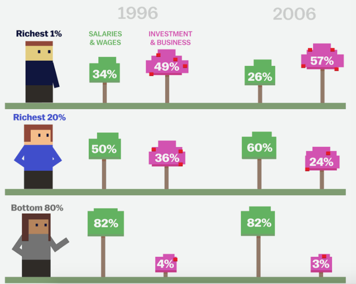
So, as revenue-generating property owners’ wealth increases faster than poorer people’s wages grow, the gap between rich and poor will tend to increase. There is unfairness built into the system; it works in favour of those who have already accumulated wealth, making them wealthier in a self-reinforcing spiral that requires less and less effort on the part of the wealthier the richer they get.But why? Wouldn’t we expect that financial capital available to invest would be diverted into high-yield ‘low hanging fruit’ investments first, and that over time, competition over these promising investments pushed the returns down?
For sure, improving technology would offer new investment opportunities, but in principle, even that should lead to more competition and eventually reduced yields for investors. Why then did Piketty find that the return on financial investment outstripped the growth in wages over the long term? 5
To answer this question we have to distinguish between the two meanings of the word ‘investment.’ The first and primary meaning of ‘investment’ is the creation, or construction, of a new physical asset; for example, imagine a manufacturing company investing in new equipment. This is investment in the economic sense.
The second meaning of the word is in the financial sense. I invest if I buy a financial asset which I hope will give me a financial return. This is ‘investment’ in the financial sense.6 There are some financial investments that are also economic investments. Classical economists talk about factories as ‘capital’ goods. 7 Such investments are expandable. As new funds become available, more factories are built. An investor who builds a new factory competes with another factory down the road. The competition reduces prices and the rate of profit falls overall. Even purchasing pre-existing assets can sometimes be part of this process, if the underlying asset is expandable, and that purchase leads to some physical investment elsewhere in the system.
But there are some financial investments that are not economic investments. We describe these as ‘pseudo-investments.’ The critical thing about these pseudo-investments is that they are not expandable: they are fixed. Their return is not competed away when funds are plentiful. Rather, the price of these assets goes up. A typical example is land. The amount of land in central London is fixed. It cannot expand. Another example would be shares in monopolies, or even other companies existing outside the perfect competition beloved of economists.
So what does this mean for the inequality of wealth? Well, if wealth is primarily composed of ‘expandable’ forms like factories, then greater availability of investible funds will lead to better growth. That growth will compete away the returns of investors as the profit rate falls. If however wealth is composed primarily of non-expandable forms like land and companies in monopoly positions, then as individuals save and demand assets, these assets will just go up in price, making the richer even richer.
These methods of the rich getting richer are not only unfair, as the monopolist or landowner need not work for the increases in wealth. They are also economically inefficient, as the monopolist overcharges and also pulls scarce investment funds away from productive investments.
The MIT PhD student Matthew Rognlie noted that Piketty’s conclusion depends on housing being included in what Piketty calls ‘capital’ (wealth) (Matthews 2015). Without housing, the return on wealth ownership no longer outstrips the growth in the economy. The share of GDP going to capital when housing is excluded is even falling slightly.
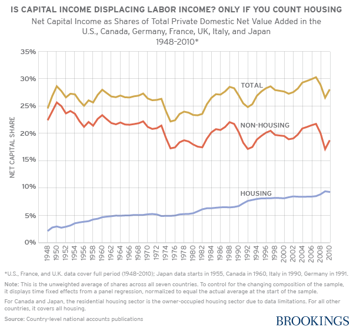
This is consistent with our argument, since housing is closer in nature to land (i.e. non-expandable with a local monopoly) than capital in the classical economic sense (i.e. expandable and competitive). To properly test our hypothesis (that it is the monopoly element - land in housing, market power in companies - that causes inequality) we’d need to disaggregate the land element from housing (relatively straightforward) and the monopoly element from companies (much less straightforward). However, the data is at least broadly supportive of the case suggested by Piketty’s economic hypothesis.
8.15 The Underlying Drivers
To summarise, economic theory tells us that there are some particular ways in which the wealthy are able to accumulate wealth which we propose to be unfair and unproductive to the economy: Land, Monopoly, and the interplay between interest rates and asset values.
Land
Wealthy people make a large proportion of their wealth through increases in the value of land which they own. When we talk about land, we are primarily concerned with the land on which urban buildings stand. This is the part of its value associated with location. Land is fixed in supply, and when certain locations become more desirable (such as London), supply cannot increase to meet demand.
The result is a localised price increase and an increase in wealth of people who own land in the area. It is important to remember that this value was not created by the landowner, but rather by the people who made the location more desirable. These external value drivers include the government, by creating transport links, schools, and parks; business owners, by creating jobs, cafes, shops, and services; and the community, by building community-links and cultural ambience. All of these creations increase the desirability of the land in a particular location. This in turn increases its value. Under the UK’s current system, the landowner is able to keep this value increase.
We believe this is unfair, since the community as a whole produces the wealth, and we propose a Land Value Tax to address this unfairness. We go into detail about this topic in chapter eight.
Monopoly
“The head of one of the largest manufacturing firms in the United States said to me recently,”It is not on our ordinary business that we make our money; it is where we can get a monopoly.” And this, I think, is generally true.” (George 1883)
A ‘monopoly’ is a stranglehold on a particular desired product, asset or service. As in the case of landowners, who are themselves a sort of monopolist, monopolists get rich because of a lack of competitors in the market, which allows them to set nearly any price they like. This means that their profits are far above the efficent level that would be set in a freely competitive market. Natural monopolies can exist when the economies of scale in running a particular business mean that it is more efficient to be large, and market share is captured on a winner-takes-all basis. The figure below summarises concepts of competition and monopoly.
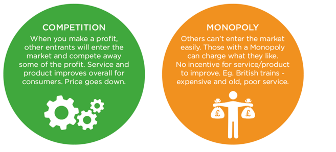
As Interest Rates Fall, the Value of Assets appreciates
Another effect is closely related, and acts to accentuate monopoly effects. As real investments get exhausted, rates of return on real investments may fall. In addition, the central bank can cut its interest rates to stimulate the economy. This encourages people to take on loans, and through high indebtedness, we can get accustomed to a low interest rate situation. This relationship has important price effects on land and other monopolies.
Wealthy people can see increases in their wealth when interest rates go down. The interest rate determines the ratio of the return on an asset to the capitalised value. For example, as interest rates fall, people can afford to borrow more to buy a house. There will therefore be an increase in the ratio of the purchase price of the house to the rent that such a house will command. This is also true of other forms of wealth, like company shares. Of course if the interest rate goes up, then the opposite happens. Since the early 1980s, there has been a fall in interest rates to the current historically low levels. Asset values have accordingly ticked up.
The figure below summarises how these factors can contribute to increased income inequality.
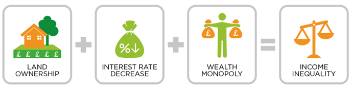
8.16 Options for Taxes on Personal Income
Income Tax and National Insurance together account for around half of all revenue raised. These taxes are likely to be important for the foreseeable future. Income tax is important as a tax on wage income and on income from investments. It is also the primary means of affecting the distribution of income using the tax system. However the existing approach is, like the rest of the tax system, unnecessary complex. Income tax, and its close cousin National Insurance (which we combine into a single tax) are also extremely efficient ways of raising revenue.
At present, the wage income is largely deducted at source in the ‘Pay as You Earn’ (PAYE) system. This means that companies administer the payment of income tax. They know how much tax to deduct because every individual has a tax code. The tax code indicates whether the taxpayer pays basic or higher rate tax.
Some income does not fall under PAYE for example: dividend income. It is impractical for a company to know all the tax codes of its shareholders. Thus, income from dividends needs to be declared by individuals at the end of the tax year alongside income tax paid by the individual concerned. At present, corporation tax is paid on profits, and the income tax paid on dividend income is reduced by an equivalent amount to compensate.
Simplification Options
We can distinguish between tax simplification and the addition of a basic income.
First, lets look at tax simplification. We can simplify the tax code through the following procedure. First put the income tax and NI system together for earned income, and apply the same rates to unearned income as earned income. Then, you would consider the top rates of tax (Income Tax + NI). We keep these as they are now, and then apply it to lower tax bands. At the same time increase the personal allowance. The two procedures can ensure that nobody pays more tax on their earned income than they do at present.
- Option 1 is this zero-high rate system (ie a large personal allowance plus a top rate)
- Option 2 is the same system, but with a low rate (no personal allowance) plus a high rate. A small basic income can be added.
- Option 3 is a basic income plus the high rate flat tax
With a flat system, everyone faces the same tax rate. There is no need for a separate tax code for each individual. All income can thus be taxed at source. This would also brings the taxation of dividends into the income tax system, which would therefore mean there is no need for a corporation tax on the part of company profits that is paid out as dividends. We still, however, need a tax on retained earnings.
The disadvantage of a flat tax system is that it is less progressive than the other system.
Conclusions
We propose to combine the current National Insurance and Income Tax systems so that there is a single tax on income. We also propose to simplify the rate structure so that there is only one rate above the allowance. Having a single rate allows the tax system to be made considerably simpler, and permits taxes to be deducted at source.
8.17 Overview of Possibilities for Taxing Wealth
Source-based Private Wealth Taxes
In general, we prefer to recommend source-based wealth taxes rather than residence based taxes. In other words, we propose to tax income-generating assets located in the UK. The advantage of this approach is that these assets are typically less mobile than the individual. This reduces the risk of tax avoidance. However, there may be a case for an internationally coordinated residence tax as well.
Residence-based Private Wealth Taxes
Because of the source-based wealth taxes we have suggested above, such a tax would not need to be set as stringently. However, risk of avoidance by the rich may be high because of their access to skilled legal advice and mechanisms to move their assets to the most advantageous locations. It may therefore be necessary to impose an international residence-based wealth tax.
We propose to consult with European and other partners so as to put in place an internationally coordinated wealth tax. The objective would be to ensure that the richest in society do not get richer faster. As outlined in previous chapters, the increased rate of growth in wealth as compared to the growth in average incomes contributes to the compounding of inequality. For a variety of reasons, this is not a desirable outcome. To that end, we aim to form a coalition with other countries to promote transparency, and create a single coordinated residence wealth tax. However, getting international agreement consensus on such a policy would be difficult and time consuming, and so should not be relied upon.
Conclusions
We will apply a source based approach which minimises the possibilities for avoidance, including a land value tax. We will cover this in the next chapters on Corporations, Land and Finance.
8.18 Summary
We’ve seen that wealth and income inequality can have deleterious social effects. We’ve noted the importance of income tax as a progressive tax reducing income inequality. We’ve also noted three methods of wealth acquisition that are both economically inefficient and unjust: Land ownership, monopolies, and related unearned capital gains due to falling interest rates. In the next two chapters, we will look at corporate structures; after that we will consider land; and finally, environment and resource rents.
References
← Chapter 7: Welfare and Work · Contents · Chapter 9: Corporations →
Footnotes
Wilson and Pickett’s research has been criticised on the basis that their findings show relationships of correlation, rather than causation. However the researchers note that many of the causal processes linking inequality with social problems are well established from other research. They argue that the key insight from their work is that the connection can be seen repeatedly in countries worldwide.↩︎
A higher Gini value represents a less equal society, with 100% meaning one person has all the income, and 0 meaning everyone has the same↩︎
The Personal Allowance goes down by £1 for every £2 that the ‘adjusted net income’ is above £100,000.↩︎
HMRC Website↩︎
And then, if wealth is consequently better distributed, the option of more leisure time and less toil, as Keynes once hoped for↩︎
We can also talk of ‘placing our money’ somewhere, and French has a separate word for a purely financial, not real, investment - a ‘placement’↩︎
The related distinction between capital and land (in classical economic terms) is considered in more detail at the end of the chapter on land↩︎